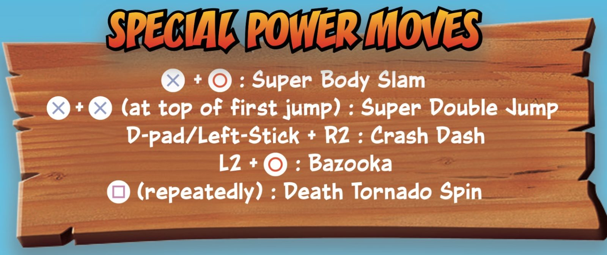

How To Play Crash Bandicoot
Everyone's favorite marsupial, Crash Bandicoot, is back! He’s enhanced, entranced, and ready-to-dance. Now you can experience Crash Bandicoot like never before. Spin, jump, wump, and repeat as you take on the epic challenges and adventures. Relive all your favorite Crash moments and get ready to put some UMPH in your WUMP!
- WUMPA FRUIT: Once you Collect 100 Wumpa Fruit, you earn an extra life!
- BOXES: Track the number of boxes left on each level.
- LIVES: View your remaining lives
- AKU AKU MASK: Aku Aku will protect you from danger during your adventure. Collect three to temporarily be invulnerable to any damage.
- TNT BOXES: Jumping on these will start a 3 second fuse and BOOM! Be careful to never Spin attack any of these.
- CHECKPOINT BOXES: Allows you to return to that checkpoint if something tragic were to happen to Crash.
You can earn valuable Gems and Keys throughout your adventure. Gems are awarded in the Stage Clear area by getting through an entire level without losing one Crash and breaking open all of the boxes. Keys are awarded in the Cortex Bonus Rounds. Gems and Keys allow Crash to access secret areas that were not originally open to him. Bonus Rounds can be accessed by collecting tokens found inside boxes. These tokens may feature the likenesses of Tawna, Dr. Neo Cortex, or Dr. N. Brio. Once you have collected all 3 tokens, you will be transported to a Bonus Round that features a ton of boxes and Wumpa fruit. If you end up falling off the screen, do not worry you will not lose a life, you simply will be transported back to the level you started from.
